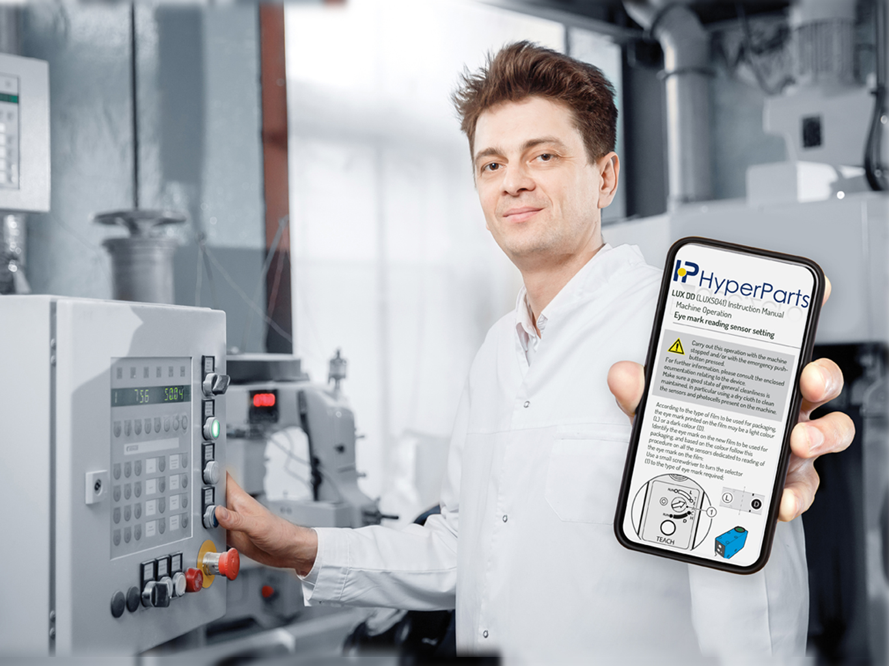

Trasforma il tuo After Sales in un centro di profitto. Con la piattaforma interattiva Hyper.Parts e il servizio integrato Due.Zero, offri ai tuoi clienti la consultazione 3D delle tavole ricambi da web e mobile, incrementando la vendita di parti originali.

Nel mercato globale dei beni strumentali, il servizio Post-Vendita rappresenta la vera "azienda nell'azienda": solo una ridotta percentuale di Costruttori sfrutta appieno il potenziale del business Spare Parts, che può arrivare a generare oltre il 20% del fatturato totale con margini elevati.
DUE.ZERO si propone come partner strategico per ingegnerizzare e digitalizzare l'intero reparto After Sales dell'OEM. Attraverso l'integrazione tra la redazione tecnica dei ricambi e la nostra tecnologia proprietaria HYPER.PARTS, forniamo un'infrastruttura B2B e-commerce e ricambistica fruibile via Web e App Mobile.
HYPER.PARTS è l'anello di congiunzione tra l'Ufficio Tecnico del Costruttore e il Reparto Manutenzione del Cliente Finale. Il sistema trasforma i complessi disegni CAD di commessa in Tavole Esplose Interattive ad alta risoluzione: